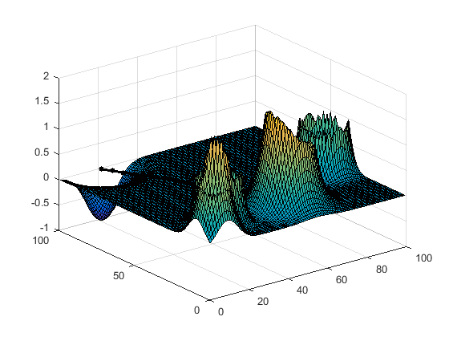
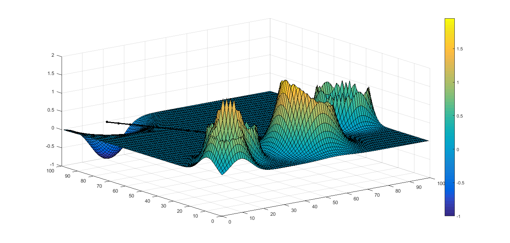

Contents
function PathPoints = map2path( obstacle, xTarget, yTarget, xStart, yStart, azimuth, elevation, MAX_X, MAX_Y)
%UNTITLED3 Summary of this function goes here % based on potential simple exponential potential field in path planning. %obstacle contain 1.coordinate_X 2. coordinate_Y 3.Height 4. radius(width) %creating positive potential field near obstacle. %These function parameters are for testing. Original parameters would be %obtained from the camera by stereo imaging the obstacles and plotting %them. This function performs path planning based on the obstacles defined %by stereo imaging, a predefined target and starting point. fieldMap = zeros(100,100); xTarget = 21; yTarget = 99; xStart = 70; yStart = 10; azimuth = 45; elevation = 45; obstacle = [10,10,54,39; 21,21,37,88; 57,21,89,100; 91,43,45,100; 53,21, 84,32]; %GENERAATING FEILD MAP BASED ON THE DERIVED INFORMATION FROM CAMAERA. sz = size(fieldMap); fieldMap = zeros(sz); targetAperture = min(sz(:,1),sz(:,2)); %define the thickness of exponential function of target. %should be of the order of smaller dimension of map. MAX_X = sz(:,1); MAX_Y = sz(:,2); %Adding obstacle feild. for a=1:size(obstacle) for b=1:sz(:,1) for c=1:sz(:,2) y = b; x = c; fieldMap(b,c) = fieldMap(b,c) + exp(-abs((x-obstacle(a,1)).^2 + (y-obstacle(a,2)).^2 - obstacle(a,4))*1/obstacle(a,3)); %obstacle end end end %adding target field for b = 1:sz(:,1) for c=1:sz(:,2) y = b; x = c; fieldMap(b,c) = fieldMap(b,c) - exp(-abs((x-xTarget).^2 + (y-yTarget).^2)*1/targetAperture); end end %visualizing fieldMap x = 1:sz(:,1); y = 1:sz(:,2); grid on; surf(x,y,fieldMap(x,y)); hold on; %generating waypoints to target based on field map based fmincon solver. numWayPoints = 20; xWayPoints = linspace(xStart,xTarget,numWayPoints+2)'; yWayPoints = linspace(yStart,yTarget,numWayPoints+2)'; h_wp = plot(xWayPoints,yWayPoints,'color','k','linestyle','none','marker','.','markersize',16); % Generate a continuous path from the waypoints PathPoints = WayPoints_To_Path([xWayPoints,yWayPoints],'linear',MAX_X,MAX_Y,201); h_path = plot(PathPoints(:,1),PathPoints(:,2),'k','linewidth',2); % Calculate the cost taken StraightLineCost = solverCostLocal(PathPoints,fieldMap,azimuth,elevation,xTarget,yTarget,xStart,yStart,MAX_X, MAX_Y,'linear'); fprintf('straight line Cost: %.1f\n', StraightLineCost);
straight line Cost: 3.9
Find an optimal path using FMINCON
Define Objective Function
objectiveFun = @(P) solverCostLocal(P,fieldMap,azimuth,elevation,xTarget,yTarget,xStart,yStart,MAX_X, MAX_Y,'linear'); % Set optimization options opts = optimset('fmincon'); opts.Display = 'iter'; opts.Algorithm = 'active-set'; opts.MaxFunEvals = 10000; % Initial Conditions xWayPoints = linspace(xStart,xTarget,numWayPoints+2)'; yWayPoints = linspace(yStart,yTarget,numWayPoints+2)'; ic = [xWayPoints(2:end-1)'; yWayPoints(2:end-1)']; ic = ic(:); % Bounds lb = ones(size(ic(:))); ub = reshape([MAX_X*ones(1,numWayPoints); MAX_Y*ones(1,numWayPoints)],[],1); %Do the optimizaiton optimalWayPoints = fmincon(objectiveFun, ic(:), [],[],[],[],lb,ub,[],opts);
Max Line search Directional First-order
Iter F-count f(x) constraint steplength derivative optimality Procedure
0 41 1.96279 -5.238
1 82 1.96263 -5.235 1 -0.0125 0.0065
2 123 1.87368 0 1 -0.0125 0.0668 Hessian modified
3 164 1.85819 -2.832 1 -0.0148 0.00744
4 205 1.85383 -2.239 1 -0.00407 0.0127
5 246 1.8532 -2.338 1 -0.00192 0.0115
6 287 1.85195 -2.462 1 -0.00314 0.0103 Hessian modified
7 328 1.84863 -2.653 1 -0.00593 0.00876 Hessian modified
8 369 1.84007 -2.918 1 -0.0111 0.00916
9 410 1.82492 -3.328 1 -0.0132 0.013
10 451 1.81256 -3.437 1 -0.00984 0.0183
11 492 1.8102 -3.215 1 -0.00489 0.0123
12 533 1.80935 -3.169 1 -0.00404 0.0115
13 574 1.80566 -2.996 1 -0.0084 0.0126 Hessian modified twice
14 615 1.79646 -2.511 1 -0.0101 0.0138
15 656 1.79041 -2.32 1 -0.012 0.0144
16 697 1.76888 -1.331 1 -0.0144 0.0149
17 738 1.75632 -0.04893 1 -0.00595 0.029
18 780 1.75176 -0.3972 0.5 -0.0281 0.0304
19 822 1.75122 -0.1986 0.5 -0.0108 0.0252
20 863 1.74354 -0.1755 1 -0.0136 0.0317
21 908 1.73978 -0.1646 0.0625 -0.0152 0.252 Hessian modified
22 949 1.73657 -0.1503 1 -0.0084 0.0287
23 990 1.73613 0 1 -0.0189 0.0192
24 1032 1.73255 -0.2208 0.5 -0.0119 0.0311
25 1073 1.72732 -0.1617 1 -0.0324 0.0233
26 1116 1.7267 -0.192 0.25 -0.0168 0.0277
27 1158 1.72487 -0.2309 0.5 -0.0275 0.0658
28 1200 1.72132 -0.255 0.5 -0.0186 0.117
29 1251 1.71917 -0.2666 0.000977 -0.0231 1.98 Hessian modified
30 1296 1.71878 -0.2777 0.0625 -0.0177 0.583
31 1338 1.71572 -0.2927 0.5 -0.0308 0.188
32 1380 1.71222 -0.3011 0.5 -0.0273 0.152
33 1421 1.68465 -0.5615 1 -0.0326 0.0204
34 1462 1.67203 -0.4809 1 -0.0147 0.0208
35 1503 1.66938 -0.4941 1 -0.0113 0.0206
36 1548 1.66827 -0.5023 0.0625 -0.0134 0.0224 Hessian modified
37 1589 1.66454 -0.4898 1 -0.0157 0.0235
38 1630 1.64527 -0.425 1 -0.0141 0.0426
39 1676 1.64091 -0.4118 0.0313 -0.0131 0.105
40 1723 1.63914 -0.4053 0.0156 -0.0113 0.149
41 1771 1.63826 -0.4026 0.00781 -0.0121 0.276
42 1815 1.63818 -0.4023 0.125 -0.0368 0.387 Hessian modified
43 1857 1.63714 -0.4033 0.5 -0.0251 0.793
44 1902 1.6361 -0.4049 0.0625 -0.034 1.28 Hessian modified
45 1945 1.6352 -0.4076 0.25 -0.019 2.9
46 1991 1.63341 -0.412 0.0313 -0.0193 6.31
47 2036 1.63206 -0.4166 0.0625 -0.0233 10.6 Hessian modified
48 2079 1.62439 -0.4943 0.25 -0.0199 0.753
49 2120 1.62318 -0.4824 1 -0.00569 0.847
50 2161 1.62243 -0.4794 1 -0.00508 0.971
51 2202 1.6208 -0.4845 1 -0.00729 1.5 Hessian modified
52 2244 1.61864 -0.5003 0.5 -0.0096 5.61 Hessian modified
53 2285 1.61639 -0.5331 1 -0.015 4.88
54 2326 1.58409 -0.4015 1 -0.0145 0.747
55 2368 1.57375 -0.2008 0.5 -0.0178 0.615
56 2414 1.57347 -0.1945 0.0313 -0.0396 0.609 Hessian modified
57 2455 1.56909 0 1 -0.0128 0.571
58 2499 1.5661 0 0.125 -0.0254 0.582 Hessian modified
59 2546 1.56542 -0.01817 0.0156 -0.0255 3.44
60 2591 1.56434 -0.149 0.0625 -0.0113 11.6
61 2636 1.56389 -0.274 0.0625 -0.0123 3.48
62 2677 1.56212 -0.08174 1 -0.0107 3.66
63 2718 1.55568 0 1 -0.0193 5.01
64 2763 1.55075 0 0.0625 -0.0238 12.5 Hessian modified
65 2806 1.53616 0 0.25 -0.0249 26.3
66 2852 1.53352 0 0.0313 -0.0276 28.3
67 2897 1.52999 0 0.0625 -0.0376 27.7
68 2941 1.52359 0 0.125 -0.0357 29.2
69 2982 1.51301 0 1 -0.131 11.9
70 3023 1.51208 0 1 -0.0683 6.92
71 3069 1.51208 -0.07571 0.0313 -0.00107 7.24
72 3113 1.50701 -0.2783 0.125 -0.0122 9.24
73 3158 1.50102 -0.3601 0.0625 -0.0459 16.8 Hessian modified
74 3203 1.50043 -0.3376 0.0625 -0.0291 15.2
75 3246 1.50032 -0.3428 0.25 -0.219 10.4
76 3289 1.49838 -0.4473 0.25 -0.0179 10.3
77 3331 1.49774 -0.433 0.5 -0.146 9.98
78 3374 1.49761 -0.3984 0.25 -0.0197 9.71
79 3415 1.49729 -0.4189 1 -0.0257 9.8
80 3457 1.49727 -0.429 0.5 -0.037 9.93 Hessian modified
81 3499 1.49698 -0.4426 0.5 -0.0165 9.81
82 3542 1.49643 -0.4529 0.25 -0.0294 9.58 Hessian modified
83 3586 1.49633 -0.4538 0.125 -0.064 9.45 Hessian modified
84 3627 1.49588 -0.4538 1 -0.0337 9.25
85 3670 1.49588 -0.4537 0.25 -0.0197 9.18 Hessian modified
86 3711 1.49556 -0.454 1 -0.0114 8.92
87 3752 1.49527 -0.4563 1 -0.0166 9.54 Hessian modified
88 3793 1.49462 -0.4584 1 -0.00667 9.62
89 3838 1.48483 -0.4878 0.0625 -0.00668 10.8 Hessian modified
90 3879 1.47606 -0.4936 1 -0.00863 11.7 Hessian modified
91 3920 1.45119 -0.5048 1 -0.012 13.4 Hessian modified
92 3962 1.43656 -0.5702 0.5 -0.0174 38.6 Hessian modified
93 4003 1.4338 -0.559 1 -0.00934 25.7
94 4044 1.41869 -0.5673 1 -0.0156 22.4
95 4085 1.41122 -0.5755 1 -0.0251 13.4
96 4126 1.39768 -0.5692 1 -0.0222 11.8
97 4167 1.39291 -0.5692 1 -0.0387 9.74
98 4208 1.39099 -0.5666 1 -0.0115 9.09
99 4249 1.38662 -0.5649 1 -0.00848 8.21
100 4295 1.36771 -0.5597 0.0313 -0.011 6.25 Hessian modified
101 4343 1.3664 -0.5583 0.00781 -0.00957 5.91
102 4386 1.36167 -0.5579 0.25 -0.0347 5.82
103 4439 1.36161 -0.5579 0.000244 -0.0753 5.82 Hessian modified
104 4480 1.35966 -0.5574 1 -0.0205 5.72
105 4523 1.34625 -0.5505 0.25 -0.0195 4.57 Hessian modified
106 4564 1.33324 -0.542 1 -0.0225 3.52
107 4605 1.33315 -0.5504 1 -0.0595 4.41
108 4646 1.32638 -0.5487 1 -0.0187 4.19
109 4690 1.32094 -0.5422 0.125 -0.0204 3.53 Hessian modified
110 4731 1.31711 -0.5468 1 -0.055 3.98
111 4772 1.30847 -0.5453 1 -0.0291 3.83
112 4820 1.30229 -0.5436 0.00781 -0.0365 3.66 Hessian modified
113 4861 1.29909 -0.544 1 -0.0343 3.7
114 4902 1.29659 -0.5433 1 -0.0402 3.64
115 4943 1.2887 -0.5419 1 -0.0213 3.51
116 4986 1.27766 -0.5399 0.25 -0.0195 3.3
117 5030 1.2702 -0.5395 0.125 -0.0224 3.25
118 5079 1.2689 -0.5394 0.00391 -0.15 3.25 Hessian modified
119 5120 1.26872 -0.5401 1 -0.0527 3.25
120 5161 1.2679 -0.5402 1 -0.0151 3.24
121 5204 1.26359 -0.5404 0.25 -0.0162 3.23 Hessian modified twice
122 5245 1.26013 -0.5412 1 -0.00881 3.27
123 5286 1.21114 -0.4028 1 -0.00876 3.55 Hessian modified
124 5328 1.20458 -0.5582 0.5 -0.00726 3.59
125 5369 1.20362 -0.5595 1 -0.00315 3.58
126 5410 1.20246 -0.5608 1 -0.00495 3.56 Hessian modified
127 5451 1.19765 -0.5443 1 -0.00858 3.47 Hessian modified
128 5492 1.18821 0 1 -0.0147 3.31
129 5533 1.17173 0 1 -0.0189 3.16
130 5578 1.14639 0 0.0625 -0.0181 2.94 Hessian modified
131 5622 1.14186 -0.2948 0.125 -0.00839 3.09
132 5668 1.13751 -0.4272 0.0313 -0.0127 3.06
133 5720 1.13703 -0.4428 0.000488 -0.0266 3.02 Hessian modified
134 5761 1.1358 -0.4662 1 -0.0302 2.9
135 5802 1.1348 -0.5554 1 -0.0133 2.87
136 5843 1.13396 -0.5393 1 -0.0663 2.86
137 5884 1.13315 -0.5473 1 -0.0402 2.85
138 5931 1.13283 -0.5511 0.0156 -0.048 2.83 Hessian modified
139 5972 1.13157 -0.5543 1 -0.0225 2.79
140 6015 1.12744 -0.5705 0.25 -0.0212 2.64 Hessian modified
141 6057 1.12689 -0.5806 0.5 -0.0151 8.48
142 6101 1.12573 -0.5812 0.125 -0.0257 5.54
143 6142 1.12353 -0.5723 1 -0.183 2.51
144 6183 1.12127 -0.5706 1 -0.0328 2.48
145 6224 1.11549 -0.5626 1 -0.0249 2.16 Hessian modified
146 6265 1.11283 -0.5601 1 -0.0522 2.15
147 6306 1.08497 -0.5332 1 -0.0181 1.86
148 6348 1.08342 -0.5118 0.5 -0.0115 2.19
149 6389 1.08002 -0.5245 1 -0.0234 1.72
150 6430 1.07811 -0.5219 1 -0.0178 1.7
151 6472 1.0776 -0.5092 0.5 -0.0202 1.62 Hessian modified
152 6513 1.06947 -0.5168 1 -0.021 1.65
153 6554 1.06594 -0.519 1 -0.0242 1.67
154 6596 1.0623 -0.5342 0.5 -0.0157 1.8
155 6637 1.05906 -0.5268 1 -0.0264 1.72
156 6678 1.05659 -0.5287 1 -0.0296 1.73
157 6719 1.05194 -0.5363 1 -0.0135 1.77
158 6762 1.04723 -0.5382 0.25 -0.0319 1.79
159 6814 1.04492 -0.5387 0.000488 -0.0814 6.06 Hessian modified
160 6861 1.04491 -0.5387 0.0156 -0.0947 1.79
161 6902 1.04426 -0.5416 1 -0.0486 1.78
162 6943 1.04376 -0.5449 1 -0.0252 1.77 Hessian modified
163 6987 1.04019 -0.5718 0.125 -0.0246 1.72 Hessian modified
164 7032 1.0389 -0.584 0.0625 -0.0204 2.94
165 7074 1.03861 -0.588 0.5 -0.0155 7.48
166 7115 1.03729 -0.5881 1 -0.0318 2.91
167 7156 1.03499 -0.5912 1 -0.0133 3
168 7201 1.03485 -0.5942 0.0625 -0.0162 3 Hessian modified
169 7242 1.03388 -0.5918 1 -0.0686 2.47
170 7283 1.03237 -0.5828 1 -0.163 1.7 Hessian modified
171 7324 1.03015 -0.5849 1 -0.0258 1.69
172 7365 1.02834 -0.583 1 -0.0113 2.4
173 7408 1.0277 -0.5818 0.25 -0.00926 13.3 Hessian modified
174 7449 1.02405 -0.5816 1 -0.0676 3.22
175 7490 1.01834 -0.5791 1 -0.014 3.06
176 7533 1.01599 -0.577 0.25 -0.012 2.67
177 7574 1.01322 -0.5751 1 -0.0265 6.34
178 7615 1.01188 -0.573 1 -0.113 1.65
179 7656 1.01014 -0.5728 1 -0.0155 1.65
180 7697 1.00377 -0.5746 1 -0.0181 1.63 Hessian modified
181 7738 1.00083 -0.5751 1 -0.0193 1.63
182 7780 0.981399 -0.5816 0.5 -0.0236 1.74 Hessian modified
183 7827 0.978956 -0.5822 0.0156 -0.0186 1.75
184 7874 0.97795 -0.5828 0.0156 -0.0125 1.76
185 7918 0.976619 -0.5831 0.125 -0.019 1.76
186 7967 0.976554 -0.5831 0.00391 -0.134 1.76 Hessian modified
187 8009 0.97613 -0.5833 0.5 -0.0364 1.76
188 8058 0.975756 -0.5835 0.00391 -0.0404 27.3 Hessian modified
189 8099 0.974889 -0.584 1 -0.154 2.8
190 8140 0.972889 -0.5853 1 -0.0504 1.72
191 8184 0.97013 -0.5885 0.125 -0.0474 2.08 Hessian modified
192 8225 0.969966 -0.5869 1 -0.048 1.68
193 8266 0.96942 -0.587 1 -0.0383 1.68
194 8308 0.969317 -0.5877 0.5 -0.027 1.71 Hessian modified
195 8349 0.968733 -0.5872 1 -0.062 2.14
196 8396 0.968416 -0.5862 0.0156 -0.0613 4.52 Hessian modified
197 8437 0.967842 -0.5868 1 -0.028 6.25
198 8481 0.967243 -0.5879 0.125 -0.0286 9.95 Hessian modified
199 8528 0.967235 -0.5881 0.0156 -0.026 8.49
200 8569 0.967041 -0.5886 1 -0.029 2.53
201 8610 0.966396 -0.59 1 -0.0156 2.62 Hessian modified
202 8654 0.965958 -0.5925 0.125 -0.0141 2.62 Hessian modified
203 8695 0.965756 -0.5922 1 -0.0607 3.66
204 8750 0.965754 -0.5922 -6.1e-05 -0.0656 3.65
205 8805 0.965749 -0.5922 -6.1e-05 -0.0716 3.64 Hessian modified twice
206 8846 0.965483 -0.5931 1 -0.103 3.09 Hessian modified twice
207 8898 0.965459 -0.5935 0.000488 -0.388 2.87 Hessian modified
208 8939 0.965235 -0.5956 1 -0.0508 2.98
209 8987 0.965203 -0.5958 0.00781 -0.0753 2.98 Hessian modified
210 9028 0.96497 -0.5964 1 -0.03 3.01
211 9072 0.96486 -0.5971 0.125 -0.0226 8.75 Hessian modified
212 9114 0.96476 -0.597 0.5 -0.0704 10.4
213 9158 0.964745 -0.5969 0.125 -0.064 5.72
214 9199 0.964689 -0.5975 1 -0.0726 3.66
215 9240 0.964588 -0.5983 1 -0.0321 5.64 Hessian modified
216 9282 0.964521 -0.5991 0.5 -0.0189 23.6 Hessian modified
Local minimum possible. Constraints satisfied.
fmincon stopped because the predicted change in the objective function
is less than the selected value of the function tolerance and constraints
are satisfied to within the selected value of the constraint tolerance.
No active inequalities.
 Plot the optimal solution:
delete([h_wp h_path]); optimalWayPoints = [xStart yStart; reshape(optimalWayPoints,2,[])'; xTarget yTarget]; xWayPoints = optimalWayPoints(:,1); yWayPoints = optimalWayPoints(:,2); h_wp = plot(xWayPoints,yWayPoints,'color','k','linestyle','none','marker','.','markersize',16); PathPoints = WayPoints_To_Path([xWayPoints,yWayPoints],'linear',MAX_X,MAX_Y,101); h_path = plot(PathPoints(:,1),PathPoints(:,2),'k','linewidth',2); LineCost = solverCostLocal(PathPoints,fieldMap,azimuth,elevation,xTarget,yTarget,xStart,yStart,MAX_X, MAX_Y,'linear'); fprintf('total Cost: %.1f\n', LineCost);
total Cost: 1.0
end
ans = 70.0000 10.0000 70.0016 9.9984 70.0031 9.9969 70.0047 9.9953 70.0063 9.9937 70.1704 10.2175 70.8545 11.1623 71.5386 12.1071 72.2228 13.0519 72.9069 13.9967 72.9803 16.0732 72.3818 19.3946 71.7834 22.7160 71.1850 26.0373 70.5866 29.3587 70.4157 30.3076 70.4158 30.3075 70.4159 30.3074 70.4160 30.3073 70.4161 30.3071 67.1880 33.0110 63.7985 35.8500 60.4090 38.6891 57.0195 41.5281 54.2760 43.8260 54.2780 43.8240 54.2800 43.8220 54.2820 43.8200 54.2840 43.8181 54.2891 43.8129 54.2984 43.8035 54.3077 43.7941 54.3170 43.7847 54.3263 43.7753 54.3324 43.7691 54.3370 43.7645 54.3416 43.7599 54.3461 43.7553 54.3507 43.7507 52.8136 44.3107 51.1143 44.9301 49.4149 45.5495 47.7156 46.1689 46.2219 46.8322 45.9626 47.7590 45.7034 48.6858 45.4441 49.6126 45.1848 50.5394 44.9239 51.4707 44.6604 52.4095 44.3968 53.3482 44.1333 54.2869 43.8698 55.2257 43.5110 56.2466 43.0937 57.3181 42.6764 58.3896 42.2591 59.4611 41.8417 60.5326 41.4605 61.5546 41.0853 62.5683 40.7101 63.5821 40.3349 64.5958 39.9603 65.6106 39.5909 66.6348 39.2215 67.6589 38.8522 68.6831 38.4828 69.7073 38.0795 70.8412 37.6082 72.1945 37.1369 73.5478 36.6656 74.9011 36.1943 76.2544 35.9928 76.8339 35.9937 76.8330 35.9946 76.8321 35.9955 76.8311 35.9964 76.8302 35.0103 78.5750 33.7919 80.7306 32.5735 82.8861 31.3551 85.0417 30.0990 87.2176 28.0869 89.8019 26.0747 92.3863 24.0626 94.9706 22.0505 97.5549 20.6150 99.3992 20.6209 99.3933 20.6268 99.3874 20.6327 99.3815 20.6386 99.3756 20.6429 99.3714 20.6457 99.3685 20.6486 99.3657 20.6514 99.3629 20.6543 99.3601 20.7101 99.3019 20.7826 99.2264 20.8551 99.1509 20.9275 99.0755 21.0000 99.0000